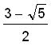
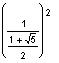
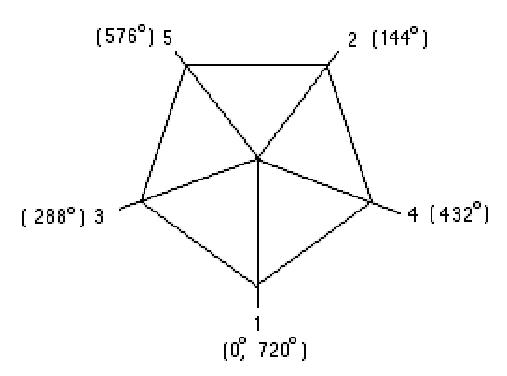

The Golden Angle/Chapter 7
The golden angle was obtained by a group of teachers examining the sunflower leaves, then finding fractions of 360� using ratios of alternate Fibonacci numbers :
1, 1, 2, 3, 5, 8, 13, 21, 34, 55, 89, ...
|
1/2 x 360� = 180� 1/3 x 360� = 120� 2/5 x 360� = 144� 3/8 x 360� = 135� 5/13 x 360� = 138.46...� |
8/21 x 360� = 137.14...� 13/34 x 360� = 137.64...� 21/55 x 360� = 137.46...� 34/89 x 360� = 137.52...� 55/144 x 360� = 137.50� |
This gives us an infinite alternating sequence whose limit is the golden angle, about 137.5� or 137�30'28". This is the angle that allows each leaf to be closest to the leaf below it in the previous whorl and farthest from the youngest previous leaf above it; in other words, it allows the leaf to get maximum sunlight. This number can be written as
(.618034)^2* 360 =  * 360, and also = * 360.
An example of a plant whose leaves whorl at an angle of 144�, which is in the sequence above:
|  |
See Cristobal Vila's beautiful short movie "Nature by Numbers" at http://www.etereaestudios.com/docs_html/nbyn_htm/intro.htm
See Xah Lee's site on curves- especially the equiangular spiral
See Lori and Don's Nautilus shell applet which shows the growth of the spiral shell from 1 to 3.2 in 360o and the constant angle of 79.5o between the tangent to the curve and the radius.
See also Golden Triangle, Pentagon, Sunflower head and Powers of Phi, on the MAP
Geoffrey graphs the ratios of the Fibonacci numbers and writes a program to get the infinite sequence which has a limit.
Tara writes a story "A Quest For The Sacred Golden Pineapple, Pine Cone and Artichoke"
Jamie an 8th grader, solved the quadratic equation x2 - x - 1 = 0, by iteration, and he and Don wrote a program to do this on a TI-84 Plus.
Comparing the spirals of fibonacci numbers, the Nautilus shell, and The equal-tempered Musical scale
See also Dr. Ron Knott's great webite for much more on the Fibonacci numbers.